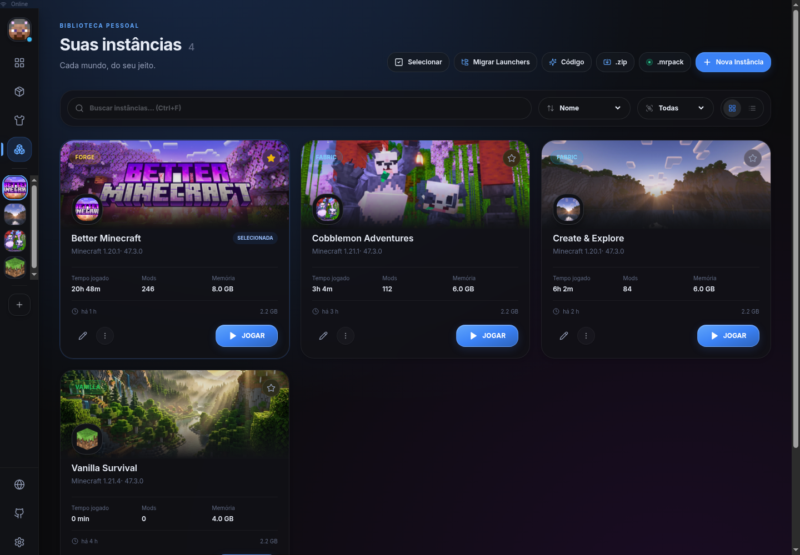
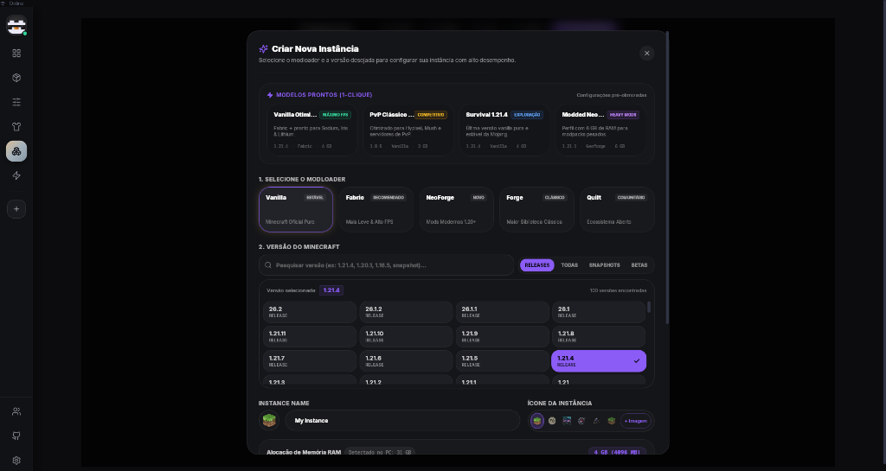
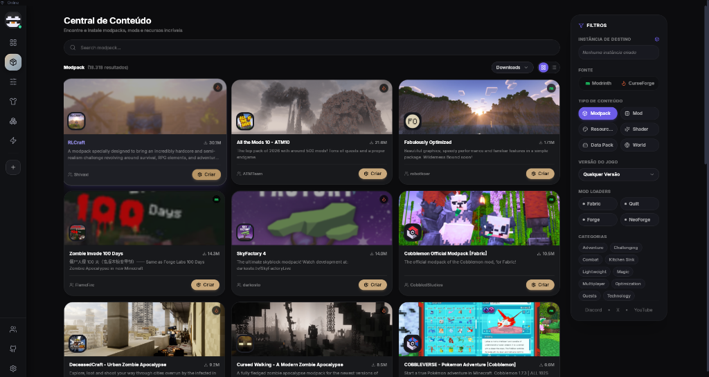
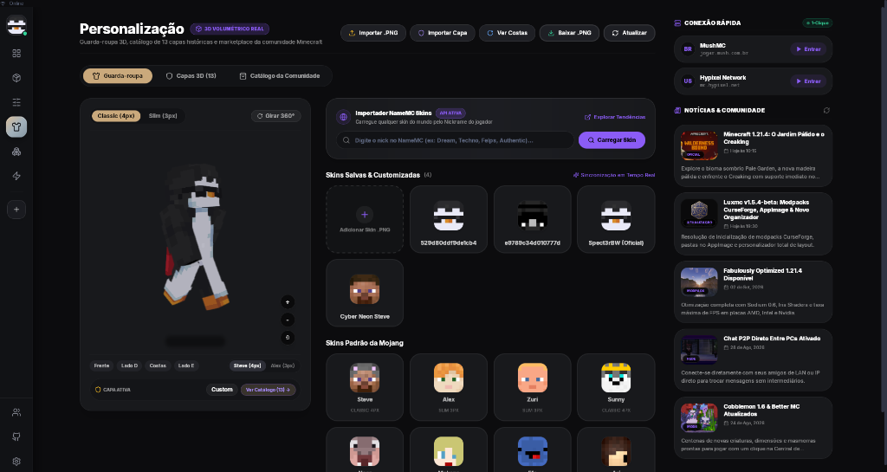

Crie sua conta.
Escolha seu nickname e uma senha no site.
Seu mundo tem mods. Tem histórias. Tem amigos.
Faltava um launcher à altura da sua próxima aventura.
Consultando versãoDownload pela Cloudflare

Uma conta Luxmc conecta seus amigos e suas preferências. Do navegador ao launcher, sua próxima sessão já começa com a sua cara.
Criar minha conta Já tenho uma conta
Uma identidade. Novas possibilidades.
Escolha seu nickname e uma senha no site.
Informe o mesmo nickname. Depois, sua senha.
Seus amigos e preferências acompanham sua conta.
Pesquise e baixe arquivos diretamente do ecossistema Modrinth para otimizar e enriquecer seu jogo.
Projetado do zero para responder instantaneamente, sem navegadores embutidos e com integração nativa ao sistema.
* Metas e valores comparativos ilustrativos; o consumo real varia por sistema, versão e carga. Não representam uma medição desta versão.
Enquanto outros launchers empacotam um navegador Chromium pesado devorando de 400 MB a 700 MB de RAM apenas para exibir um menu, o Luxmc é compilado nativamente em Rust com interface reativa em Svelte 5 runes.
Suporte nativo ao protocolo Wayland sem bordas borradas ou cursor desalinhado. Tratamento em tempo de execução para o erro GLFW 65548 e suporte a Zink Vulkan.
Motor 3D que corrige automaticamente artefatos pretos e pixels ocos em modelos Alex (3px) e Steve (4px), com sincronização instantânea de skins e capas.
Eliminamos a falha de driver OpenGL (WGL) ao inicializar modpacks modernos como All The Mods 11 e BetterMC. O launcher detecta a GPU e inicializa os contextos gráficos com aceleração por hardware.
O recurso "Jump In" rastreia sua última instância jogada e tempo de jogo recente, eliminando telas de carregamento desnecessárias e pastas confusas.

Navegue por todo o catálogo de mods, modpacks, resource packs e shaders do Modrinth e CurseForge em uma única interface limpa, com resolução automática de compatibilidade.

O Luxmc inclui um motor de normalização e visualização 3D que corrige automaticamente pixels pretos ou vazios na parte de trás dos braços (Steve 4px e Alex 3px), além de suporte a capas comemorativas exclusivas.

Presets rápidos de RAM (2G, 4G, 6G, 8G, 10G, 12G, 16G e Auto), flags JVM testadas para modpacks (Aikar, ZGC, Shenandoah) e alternador de compatibilidade XWayland para eliminar erros GLFW no Linux.

Compare a arquitetura e eficiência do Luxmc frente a outros launchers do ecossistema.
| Recurso / Métrica | Luxmc (Beta) Recomendado | Launcher Oficial | Prism Launcher | CurseForge App |
|---|---|---|---|---|
| Memória RAM em repouso | < 100 MB | ~450 MB (CEF/Electron) | ~160 MB (Qt) | ~650 MB (Overwolf) |
| Tempo de Abertura | < 0.4s (Instantâneo) | ~4.0s | ~1.5s | ~8.0s |
| Suporte Nativo a Wayland | ✓ Nativo (Zero Crash) | Parcial / XWayland | ✓ Suportado | ✕ Não Suporta |
| Catálogo Modrinth Integrado | ✓ Direto com 1 clique | ✕ Inexistente | ✓ Integrado | ✕ Inexistente |
| Visualizador 3D de Skins + NameMC | ✓ WebGL + Cura 4px/3px | ✕ Básico estático | ✕ Básico | ✕ Inexistente |
| Sessão Microsoft Persistente | ✓ Token perpétuo em BG | ✓ Suportado | ✓ Suportado | ✕ Desloga frequente |
| Anúncios ou Telemetria Invasiva | ✓ Zero (100% Livre) | Telemetria MS | ✓ Zero | Propagandas & Rastreio |
Tratamento automático de janelas e ícones no Wayland nativo para AppImage. Elimina falhas de inicialização em distros como Ubuntu 24.04 e Arch Linux.
Inicialização limpa de contexto OpenGL (WGL) no Windows para modpacks complexos como All The Mods 11, evitando o crash de driver inexistente.
Renovação assíncrona e contínua do refresh_token em segundo plano. Sua conta permanece autenticada até que você decida sair manualmente.
Motor de ping de servidores reescrito com isolamento de buffers e gerenciamento de favicons, buscando reduzir o consumo de memória do aplicativo.
Selecione seu sistema operacional. As versões são compiladas nativamente e distribuídas pelo GitHub.
Universal, portátil e pronto para rodar. Suporte de primeira classe a Wayland nativo e compatibilidade XWayland.
chmod +x Luxmc_*.AppImage && ./Luxmc_*.AppImage
Instalador nativo otimizado para Windows com suporte a modpacks NeoForge, drivers OpenGL WGL e aceleração por hardware.
Instale e receba atualizações contínuas do Luxmc diretamente pelo repositório AUR com seu helper favorito.
yay -S luxmc-bin
paru -S luxmc-bin
Pacote compilado para distribuições baseadas em Debian, Linux Mint, Pop!_OS e Zorin OS.
Respostas claras sobre estabilidade, compatibilidade e arquitetura técnica do Luxmc.
LUXMC SOCIAL · PRÉVIA
Seu próximo mundo.
Com a sua turma.
Explorando Minecraft · 1.20.1
Online no Launcher
Convites com confirmação, skins reais e conexão direta a mundos compartilhados.